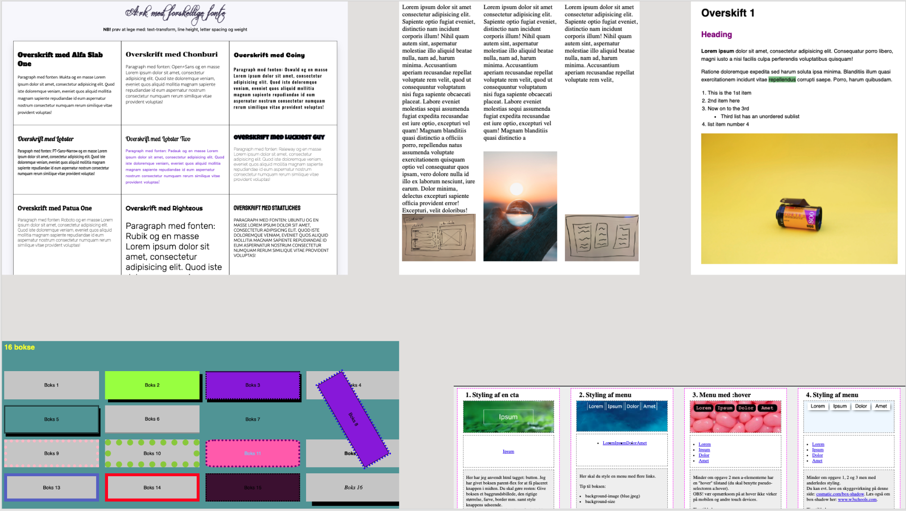

process
OPGAVEN MED UDGANGSPUNKT I STUDIESTARTSPRØVEN
I vores første opgave, som skulle afleveres som studiestartsprøve, skulle vi udarbejde et website som beskrev en stilart. Vi skulle uploade det til eget domæne og det skulle være opbygget omkring det layoutdiagram vi havde fået tildelt og det skulle validere i HTML og CSS.
HVAD VI STIFTEDE BEKENDTSKAB MED
I dette tema lærte vi om en masse ting i forhold til design, HTML og CSS da det var første gang vi skulle stifte bekendtskab med brugervenlighed, brugertest, layoutkomposition, responsivt design, idégenering, filformatet, filezilla, inspector, layoutdiagram etc. Til studiestartsprøven benyttede jeg det uddelte layoutdiagram at gå ud fra, da det var en del af opgaven, hvilket gjorde at vi blev sat ordentligt ind i det og forstod det til vi senere hen selv skulle udvikle dem.
STYLETILE
Jeg lavede et styletile for at vise, hvilken stil jeg ville gå efter og analyserede amerikanske magasiner for at se hvilket udtryk jeg gerne ville have med i min stilartside som bestod af sheriffer, eftersom de også brugte det i deres magasiner i den tid og de lyse nuancer eller pang farver. Set i bakspejlet ville jeg gerne have lagt mere fokus på de nuværende magasiner og trukket en parallel der i form af deres grafiske udtryk eftersom det har ændret sig meget.